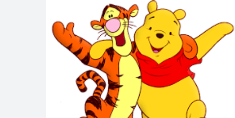
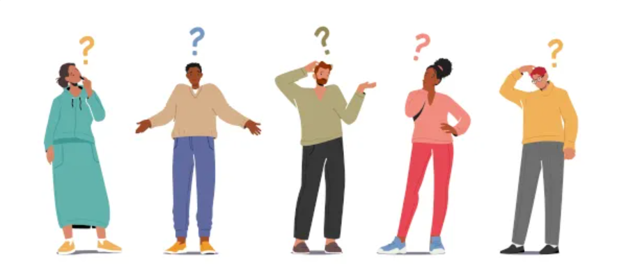
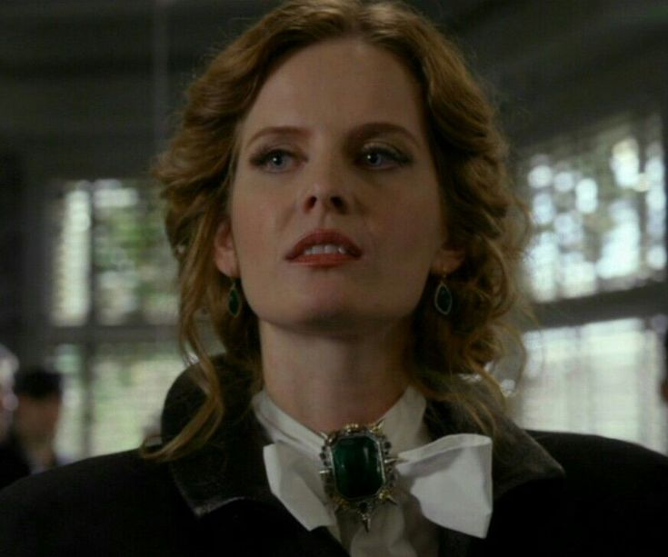
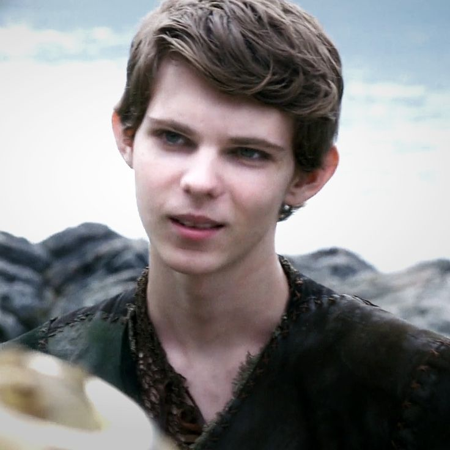

sobreo jogo
Cenários
Os cenários onde você poderá andar

Personagens
História dos Personagens

Curiosidades
Alguns fatos curiosos sobre o desenvolvimento
e desenrolar da história
sobre
nós



Por que fizemos isso?
Com o principal motivo que nos uniu para realizar esse jogo foi o Trabalho de conclusão de curso, entretanto, todos do grupo, no início da entrada ao 1°ano da Etec gostariam de realizar um jogo. Colocamos as ideias na mesa que ja vinham sendo elaboradas e colocamos em prática. Desse modo, realizando metas estudantis e se aperfeiçoando no desenvolvimento de sistemas.
Contato
Se você estiver interessado em nosso trabalho ou
apenas quer fazer alguma pergunta?
-
example@email.com -
example.insta